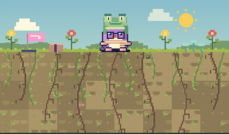
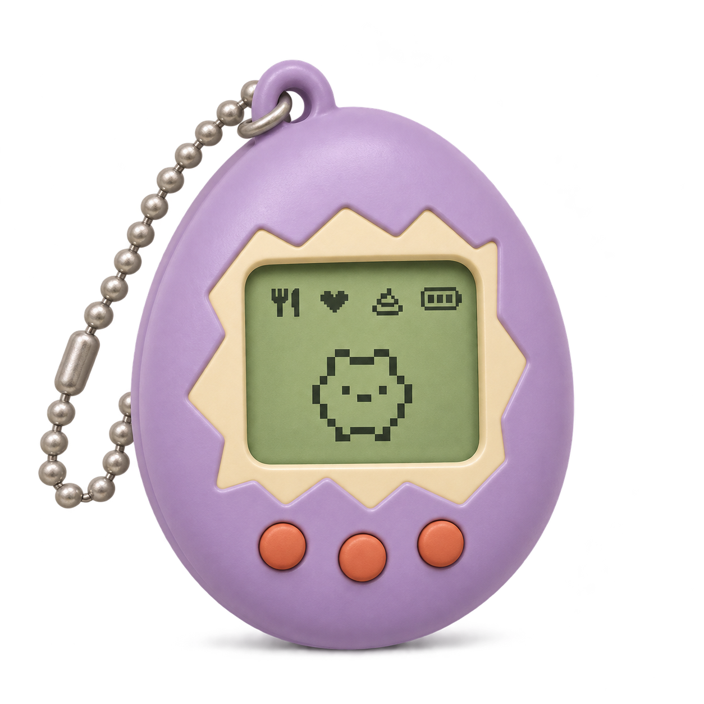
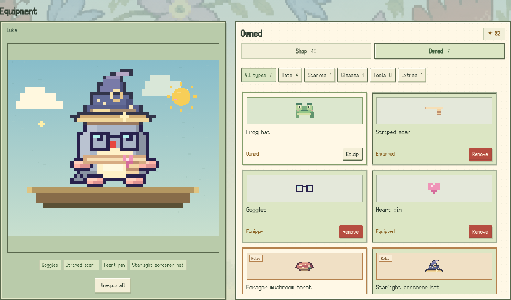

design byZhenyao WangYun Ye
02 / PRODUCT OVERVIEWWeb · Windows · macOS
Eumo.
A study companion for starting, staying,
and returning.
- WHO
- Learners aged 8–35 who study or work independently and want more structure and company.
- PROBLEM
- Distractions, isolation and delayed progress make it difficult to start a task, sustain effort and return after interruptions.
- HOW
- Eumo combines a flexible timer, AI chat, online friends and earned rewards to make independent work feel supported.
FocusSurface · 000 m


Luka · chatOne small step at a time.
I'm here with you.
03 / PROJECT INSPIRATION
Two sources of inspiration.
01Online co-study
Discord · Zoom · Study livestreams
 Illustrative co-study scene
Illustrative co-study sceneShared presenceMutual accountability
02Traditional electronic pets
Tamagotchi as a design reference

Illustrated electronic-pet referencePersistent characterEmotional attachment
DESIGN DIRECTIONA study companion with optional human connection.
04 / RESEARCH INSIGHTS
Research Insights
A review of 138 randomized studies found that tracking progress helped people achieve their goals.
The review included 19,951 participants. Benefits were greater when progress was reported or made public.
Eumo: optional friend visibility and shared study time.
Harkin et al. · 2016 · Psychological Bulletin ↗
05 / PERSONA
Alex, 20
Study profile
Study context
An undergraduate studying on a laptop at home or in the library, moving between readings, notes and coursework.
Goals
Start a manageable session and complete a concrete task, with company and control over the pace.
Pain points
Starting alone feels difficult. Interruptions break momentum; phone-based tools occupy the phone and use its battery.
Product needs
A persistent companion, flexible pauses and optional friend visibility. Rewards that support task progress.
06 / FOCUS TOOLS
Competitive Analysis
Pomodoro apps
Timed focus blocks with scheduled breaks.
Fixed intervals; penalty rules in some apps.
Cat On Chair
A focus timer with a cat, gifts and room decoration.
No live peer study presence listed.
Eumo
A flexible timer with a persistent study companion.
AI chat + online friends + earned rewards
07 / PRODUCT WALKTHROUGH
EUMO / SETUP

Live demonstration · 6 minutes
08 / USER FEEDBACK & ITERATION
User Feedback & Iteration
USER FEEDBACKIMPLEMENTED RESPONSE
EUMO / WARDROBE

Discoveries can be exchanged for apparel.09 / DEVELOPMENT ROADMAP
Next Steps
01App UI
Refine hierarchy, navigation and responsive layouts.
02Enclosure design
Develop the shell, materials, grip and charging access.
03Device interface
Simplify pairing, timer controls and reward feedback.
04Commercial launch
Test paid offerings and pricing; prepare app-store submissions.
10 / PRODUCT EXTENSIONS
Physical product extensions.
WORKING NFC PROTOTYPETap to open a link.
A physical entry point to Eumo.
COLOR / Orange TimerDigging
Next validationEveryday use · ergonomics · feasibility
11 / COMMERCIAL STRATEGY
Business Model
Free core. Optional paid layers.Timer and basic companion remain accessible.
Proposed model
01RECURRING REVENUEPremium membership
Expanded AI support and premium personalization.
Monthly / annual subscription
02DIGITAL SALESDigital collections
Artist-designed outfits, interiors and seasonal worlds.
One-time content purchases
03PRODUCT SALESPhysical products
NFC keychains and the Canele focus device.
Direct sales / app bundles
Acquisition
Study communities · campus creators · referrals
Distribution
Web & desktop → app stores → direct product sales
Cost structure
AI & hosting · art production · hardware & fulfillment
Thank you.
Zhenyao WangYun Ye